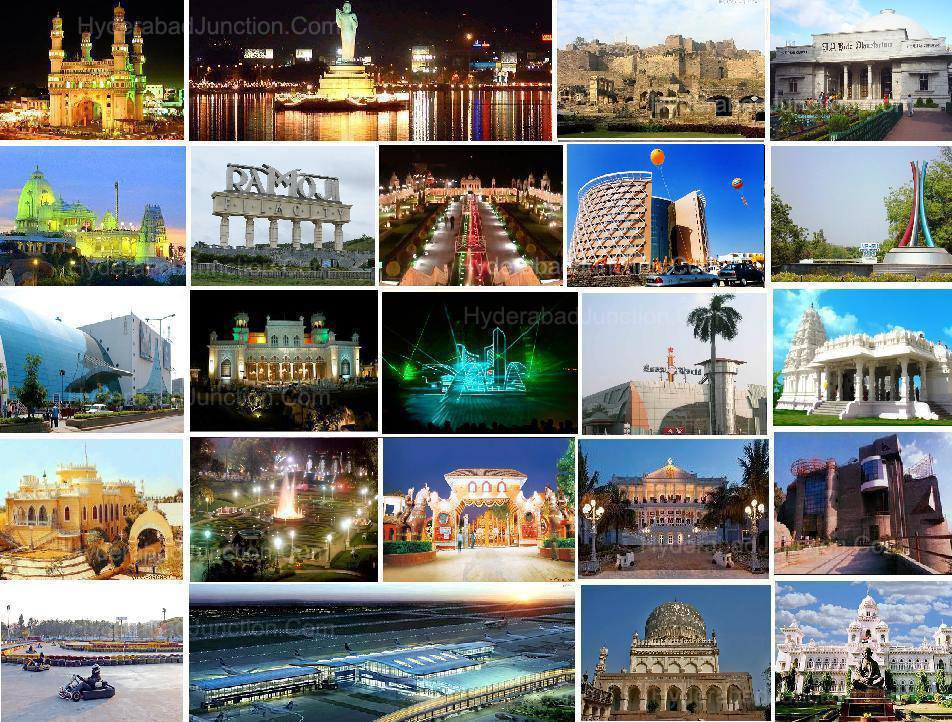
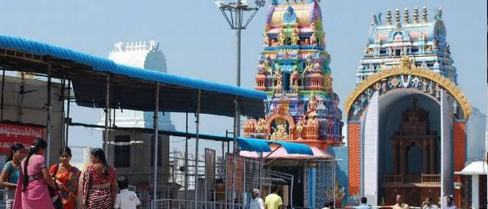

Telengana is a state in India situated on the centre-south stretch of the Indian peninsula on the high Deccan Plateau. It is the eleventh largest state and the twelfth-most populated state in India with a geographical area of 112,077 km2 (43,273 sq mi) and 35,193,978 residents as per 2011 census.[9] On 2 June 2014, the area was separated from the northwestern part of Andhra Pradesh as the newly formed 29th state with Hyderabad as its historic permanent capital. Its other major cities include Warangal, Nizamabad,Khammam and Karimnagar. Telangana is bordered by the states of Maharashtra to the north, Chhattisgarh to the east, Karnataka to the west, and Andhra Pradesh to the east and south.[10] The terrain of Telangana region consists mostly of hills, mountain ranges, and thick dense forests covering an area of 27,292 km2. As of 2019, the state of Telangana is divided into 33 districts.
Rice is the major food crop and staple food of the state. Other important crops are maize, tobacco, mango, cotton and sugar cane.[74] Agriculture has been the chief source of income for the state's economy. The Godavari and Krishna rivers flow through the state, providing irrigation. Apart from major rivers, there are small rivers like Tunga Bhadra, Bima, Dindi, Kinnerasani, Manjeera, Manair, Penganga, Pranahitha, peddavagu and Taliperu. There are many multi-state irrigation projects in development, including Godavari River Basin Irrigation Projects and Nagarjuna Sagar Dam, the world's highest masonry dam. Telangana culture combines cultural customs from Persian traditions, embedded during the rule of the region by the Mughals, Qutub Shahis and Nizams, with prominent and predominantly south Indian traditions and customs. The State has a rich tradition in classical music, painting and folk arts such as Burra Katha, shadow puppet show, and Perini Shivatandavam, Gusadi Dance, Kolatam.